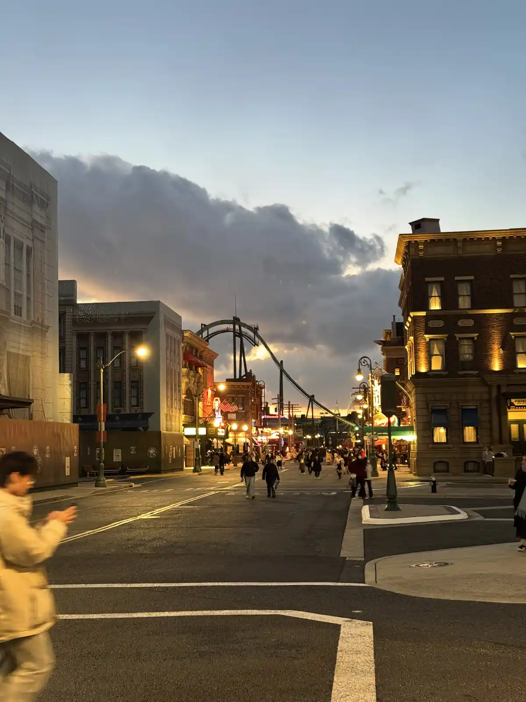
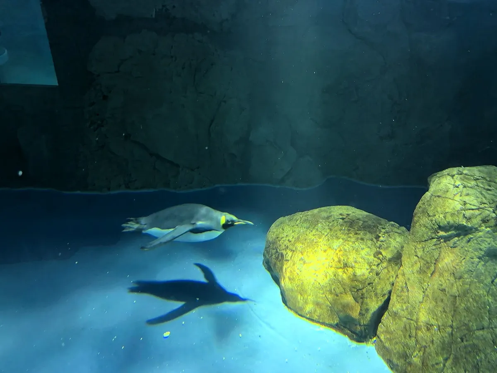
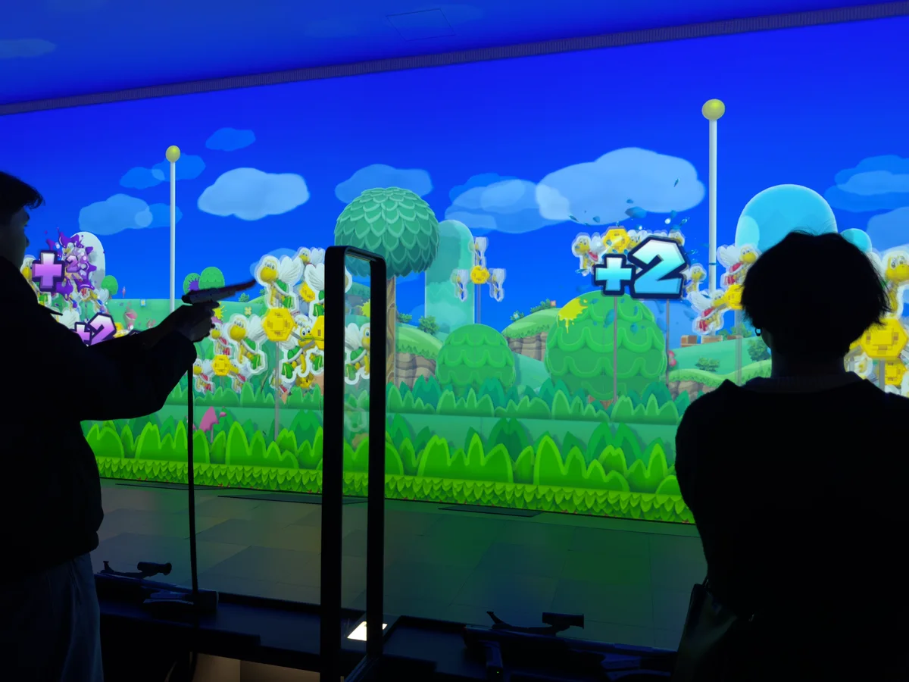

一個人去大阪六天五夜｜一個人的旅行｜通天閣、環球影城、海遊館、空庭溫泉、心齋橋、木津市場、任天堂博物館、大阪摩天輪、嵐山、京都八坂神社、奈良東大寺、梅田空中花園
期待已久的旅行終於要成行了！最近被工作轟炸，好不容易熬到了三個月前安排的出國行程，總算能好好放鬆一下。
這次的旅行對我來說是人生目標之一。還記得以前罹患白血病時，因為太無聊，就默默地規劃著——如果有機會順利康復，一定要去日本玩。而現在，這個願望終於要實現了！此外，也想順便挑戰一下孤獨指數(?)，所以特別安排了一個人的環球影城之旅~
這次主軸是走復古遊戲之旅，終於成為可以亂買遊戲的大人了，也想要一圓小時候的夢想，所以途中找了許多紅白機跟 GBA 的二手遊戲店家，把以前不敢下手的遊戲都買回來了。
行程表
這次行程表安排的滿緊的，部分行程有點趕不上，只好搭計程車，在計程車方面就快要噴了 1000 元。
旅遊紀錄的短片
票券資訊與花費
以下費用供參考
交通以 ICOCA 為主 🚆
相關票卷使用 kkday 或 klook 購買。
大阪觀光
| 票券名稱 | 票價 |
|---|---|
| 日本環球影城門票 + 超級任天堂世界™ 園區 + 關西樂享周遊券 |
2825 元 |
| 道頓堀周圍20分鐘游船｜Indy cruise | 309 元 |
| 梅田藍天大廈空中庭園展望台門票 | 416 元 |
| 空庭溫泉 OSAKA BAY TOWER 入場門票 | 466 元 |
| Osaka Wheel 大阪摩天輪(暖桌加燒酒、兩圈) | 580 元 |
| 京都一日遊 嵐山・八坂神社・奈良公園・東大寺 |
2252 元 |
住宿
| 票券名稱 | 票價 |
|---|---|
| No.364 APA飯店 難波心齋橋東 | 7428 元 |
機票
| 票券名稱 | 票價 |
|---|---|
| 樂桃航空 MM24 出發、MM27 回程 | 12160 元 |
Day 1 25/02/17 前往大阪市區
【06:30-13:10】出發
這次是搭乘樂桃航空的 MM24 出發，早上 9:40 的班機，但是因為我住的地方離機場很遠，天還沒亮就要先出發了~
【13:10~15:00】行李運送
這次使用 JAL ABC 的行李托運服務，他們會直接把行李送到飯店，不過我抵達的時間比較晚，所以要到隔天才會送到，所以建議手提行李可以準備一天的衣服，托運服務總共花了 2730 日圓。
可以先把飯店的資訊都準備好，以免到時候手忙腳亂，訂單上會有飯店的地址、電話、Email，到時候只要按照上面的資訊填寫就可以了。比較奇怪的是 hotel ID ，我當時是 KKday 的預約編號跟訂單編號都寫上去，不確定是要寫哪一個才是正確的。不過都寫行李還是順利地可以送到飯店。
【15:00~16:00】大鳥大社
| 大鳥大社周遭 | |
|---|---|
| 大鳥大社的御守 | |
|---|---|
【16:00~18:30】通天閣
接下來，搭乘地鐵到通天閣站，這是因為剛好買環球影城的時候，有附關西樂享周遊券，所以可以透過周遊券上到通天閣的展望台，另外還可以再加 300 日圓，上到戶外的特別觀景台。
| 通天閣觀景台 | |
|---|---|
【18:30~20:00】日本橋
直接從通天閣走到日本橋，這邊有超多復古遊戲可以買的，不過也因為太多外國遊客在這邊買，而且加上有名 IP 像是寶可夢或是薩爾達傳說之類，貴到完全買不下手，甚至會比當時剛出來的價格要貴。不過有一些相對冷門的遊戲，價格就滿便宜的，所以還是可以逛逛來。
Super potato 算是滿有名的復古遊戲店，內容相當的齊全，不過價格普遍都比較貴一點，不過如果不在意價格，只想要收藏的話，這邊還是滿值得逛的。
駿河屋有很多動漫相關的二手內容，也是有各式各樣的二手遊戲。在這邊買了星之卡比_鏡之大迷宮，只花了 900 日圓，大概是 200 台幣左右，跟蝦皮上面賣的價格來比，算是滿便宜的。
另外遊戲偵探團也是在大阪滿有名的二手遊戲店，不過逛了一下發現沒有想要買的遊戲，所以馬上就出來了。
在日本橋逛一逛也又看到看到電子材料行，所以就進去逛了一下，電子材料行逛起來的感覺超開心的(?)，店面非常的整潔，而且這間的東西滿齊全的。但是買玩遊戲想要回頭再逛一下的時候，發現已經關門了，所以就只能下次再來了。

【20:00~21:00】返回通天閣
因為日本的店家都滿早關門的，所以就優先逛日本橋，逛完以後再回到通天閣，不過這個路線沒有很順，如果要走相同行程，感覺可以從通天閣，走到日本橋，然後再走到心齋橋。
前一次來因為沒吃到炸串感覺有點遺憾。所以這次找了炸串店，他們有中文的菜單，有簡單介紹說會有付費的小菜 (お通し) 跟醬料不要沾兩次。炸串吃起來還好，沒有特別驚艷的地方，吃到最後感覺都是醬的味道，所以感覺嘗試看看就好。
接下來去玩打靶(しゃてき)，感覺在日本的動畫中常常看到這種遊戲攤位，所以想說來玩玩看，槍的威力還滿強的，準度也滿高的，不過不知道為什麼就是沒辦法把獎品打下來。最後只拿到一個玉米棒 QQ。
【21:00~22:00】飯店
這次住大阪難波心齋橋東APA飯店，房間真的滿小的，而且我習慣住小地方所以沒差，不過如果是兩個人的話可能會有點太小。不過還好離地鐵站很近，交通很方便。
Day 2 25/02/18 環球影城
【10:00~20:00】環球影城
終於到了環球影城~~不過今年環球影城已經取消提早入園，所以沒有早起排隊，所以這次是挑一個相對輕鬆的時間入園。安檢似乎變得更嚴格一點，我還因為電子書的筆被攔下來打開包包檢查 XD。
選擇遊樂設施主要是選擇上次沒有玩過的，所以就沒有去「小小兵樂園」跟「哈利波特禁忌之旅」，大推「太空幻想列車」、睽違一年半整修後重新開放的「侏儸紀公園・乘船遊」，以及還有新開的「咚奇剛的瘋狂礦車」。
因為我是單人去的關係，所以都排單人通道，等待時間都變得滿短的，像是「太空幻想列車」大約 20 分鐘，「侏儸紀公園・乘船遊」大約 10 分鐘(這個設施好像都沒什麼人在排，不知道是不是因為會濕掉的關係)
因為上次去環球影城體驗過排隊退稅地獄，所以我在下午就把基本想要買的東西買齊，雖然會帶很多東西移動，不過這樣就不用擔心要來開園區的時候，還要在那時候排隊退稅，節省下很多時間。
因為有買任天堂保證入園卷，在下午的時候過去就看到門口有在管制，要有通行證的人才能進去。這次有玩到新開的「咚奇剛的瘋狂礦車」，單人排隊排了 60 分鐘(告示牌顯示要 120 分鐘)，坐類似雲霄飛車的感覺，各種場景也滿有趣的。而且在玩的時候竟然剛好飄雪，身為一個沒看過雪的人，感覺超級興奮的。
玩到晚上準備要回去了，在離開前去排了《哆啦 A 夢～大雄的繪畫世界物語～》，劇情上偏短且簡單，不過在一些運用 3D 跟環境氛圍營造上還滿有趣的，像是一些泡泡跟水霧的使用，達到一種虛實結合的感覺。
|  | |
 |
|
【20:30~21:00】Uniqlo
去玩環球影城後，因為日本的天氣很冷，所以就先去 Uniqlo 買衣服，日本 uniqlo 真的超便宜的。買完以後回到飯店，看到自己所託運的行李也到達了。
【23:00~00:00】心齋橋 唐吉訶德
在飯店稍作休息與吃晚餐以後，晚上就到唐吉訶德買一些要帶回去的紀念品，不過去唐吉訶德的路上，不小心走到牛郎街(宗右衛門町)，不過幸好只有被一個人拉客，禮貌的拒絕以後，就趕快離開了。
Day 3 25/02/19 海遊館、空庭溫泉、心齋橋
【09:00~10:00】吃早餐
這天走比較休閒一點的行程，所以早上先吃飯店的早餐，這間《APA飯店 難波心齋橋東 》的早餐是跟《YAKINIKUEN 忍鬨》燒肉店一起的，所以早餐的餐點是燒肉或咖哩，他們的燒肉真的很好吃，大推，不過一個人要 1000 日幣，有點小貴。
【11:00~14:00】海遊館
接下來出發到海遊館，從心齋橋坐地鐵到大阪港站，大概花了一個小時左右抵達。
我沒有事先購買門票，所以到現場購買，門票大人是 2700 日幣，入場速度滿快的。大阪海遊館非常推薦可以到裡面逛逛，我停留了三個小時左右，人雖然滿多的，但是整體動線還滿舒服的，然後裡面可以很悠閒地拍照。
海遊館裡面的結構滿特殊的，他是從上往下逛的，所以一開始會先到 4 樓，然後再慢慢往下逛，可以看到同一個水缸但是不同深度的生物狀態。底部有一個水母的展示區域，水母的燈光打起來滿美的。
| 海遊館內部 | |
|---|---|
|  | |
.webp) |
|
逛完海遊館後，就出發去空庭溫泉，空庭溫泉的交通方式是坐地鐵到弁天町站，大概坐了 30 分鐘左右抵達。前往的途中還下雪了~
【15:00~18:00】空庭溫泉
空庭溫泉門口首先要脫下鞋子，接著拿到一個鑰匙扣，這個鑰匙扣會在接下來的行程中一切消費的使用，接著到前台換門票(因為事前有在 kkday 上購買，不過也可以現場購買)。
| 鞋櫃換鞋與拿 IC 手環 | |
|---|---|
一切弄完以後，就可以去選浴衣了，浴衣的選擇滿多的可以選，然後在館內都是要穿浴衣的。館內滿多可以拍照的點，我剛開始進去的時候，完全搞不懂這棟建築物的結構，繞了一下子才知道要怎麼逛。
| 裡面的布景 | |
|---|---|
小魚按摩去角質，我覺得滿舒服的，腳會覺得癢癢的，不過這個設施要額外付費。
| 小魚按摩去角質 | |
|---|---|
樓上有一個是戶外的區域，有免費的足湯可以泡，也有一些造景可以供遊客拍照，不過外面有點冷(還在下雪)，我只泡了一下下就走了。
另外，館內的溫泉是裸湯，所以也花了一些時間克服 XD，一直在要泡溫泉，還是直接花錢買獨立房間(需事先預訂)做取捨，後來還是決定去泡大眾池，不過泡完真的滿舒服的。泡完以後，一定要記得去牛奶販賣機買牛奶喝，超好喝的。
| 牛奶販賣機 | |
|---|---|
泡完溫泉以後，就到了他們的餐廳吃晚餐，餐廳的餐點滿多樣的，有壽司、拉麵、天婦羅、炸物等等。我點了炸物跟蕎麥麵的套餐。
最後離場的時候，把浴衣歸還，並且去付款的機器掃描手上的 IC 手環，就可以離場了。
【19:00~21:00】道頓堀
從空庭溫泉出來以後，就在搭著地鐵到就到道頓堀逛逛，順便等預定 20:30 的道頓堀水上觀光船。在路上逛了許多扭蛋店，也逛了 book off，買了幾本物理的參考書(?)，還有看了一下有關於 gba 的卡帶，收了一張黃版神奇寶貝的卡帶，花了 3800 日幣。
這個在 KKday 預定的觀光船還不錯，導遊會幫你拍照(不用找陌生人 XDD)，只不過光觀船的時間只有 20 分鐘，而且景色基本上都差不多，差別是不用走跟拍照的角度會漂亮一點。

【21:00~22:00】鶴橋風月 晚餐
晚上就到了鶴橋風月吃晚餐，這間店雖然是主打大阪燒，但是我那時候看圖看不出來原來這個是鐵板燒，我後來點了炒麵跟豚平起司燒，前面有一個鐵板可以自己加熱，我把炒麵加熱到底部有點焦焦的，覺得很好吃。豚平麻糬起司燒其實就感覺跟台灣的蛋餅差不多，而且價格有點貴。
.webp)
吃完晚餐以後，從這邊回到飯店只需要 10 分鐘左右，所以就回飯店休息了。
Day 4 25/02/20 木津市場、任天堂博物館、大阪摩天輪
第四天的主軸是任天堂博物館，所以早上就先到木津市場吃海鮮。
【08:00~09:00】木津市場
這邊的海鮮真的滿新鮮的，因為我本身對於不新鮮的東西滿敏感的，吃完以後，沒有任何不適的感覺。木津市場整體氛圍跟台灣的傳統市場很像。不過也有觀察到好像這邊也越來越觀光客化了。而且這邊很少可以內用的店面，外面有一個可以吃東西的地方。跟黑門市場的感覺稍微有點不一樣。
 |
後來買了鮭魚、鰻魚和處理過的蟹肉(賣像有點醜 XD )，鮭魚 1000 日幣，鰻魚 500 日幣，蟹肉 500 日幣。其實也是不太便宜。
.webp)
【11:00~12:00】hard_off (枚方長尾店)
接著，因為想去買一些懷舊的遊戲，因此找了離任天堂博物館最近的超大間的 hard_off 去逛逛。不過這邊其實也算不太順路，從這邊到任天堂博物館需要一個小時。
終於到了 hard off 了，這邊的東西真的滿多的，有各式各樣的遊戲卡帶，還有黑膠唱片機，真的好想帶回家。我在這邊買了幾張遊戲卡帶，其中也買了薩爾達傳說織夢島的 GBA 卡帶(2700 日幣)、馬力歐第一代 FC 卡帶(880 日幣)、洛克人 ZERO 的 GBA 卡帶和一塊多啦 A 夢的紅白機卡帶。

快到 12 點的時候，就準備離開 hard off 了，動身前往任天堂博物館。
【13:10~17:00】任天堂博物館
後來做電車到了小倉站（京都），接著再轉車到任天堂博物館。
買票的時候發生了一些小事情，我在網路上訂票的時候，不小心把姓名寫反了，因為任天堂的購票系統跟台灣習慣用的順序一樣，是先姓後名。後來根據購票時所寄的信件上的電話，直接打了國際電話，幸好任天堂博物館有英文客服，才幫我解決掉了這件事情。
任天堂博物館主要有兩個建築物，一個是主要的博物館(2F)、體驗區跟商店(1F)，另外一個是花牌體驗(2F)跟餐廳(1F)，我首先是先到主要的博物館那棟，在那棟預約花牌體驗，接著再慢慢逛博物館。
任天堂博物館
博物館非常建議逛，看完不知道為什麼有一種莫名的感動，有可能是因為以前小時候都是玩任天堂的遊戲長大的，從任天堂的展品中，也可以看到 枯れた技術の水平思考 的實踐，從各種嘗試與失敗中，找到新的可能。從博物館中，有區分為以主機和以不同類型的遊戲(例如合作遊戲、運動遊戲、3D 遊戲等等)的發展史，可以從中看到任天堂的遊戲是如何從最初的紅白機，到後來的 Game Boy、GameCube、Wii、Switch 等主機的發展。
其中覺得最感動的是可以親眼看到 Virtual Boy 的展示，雖然這個主機在當時的銷量非常差，不過想法非常的前衛，在 1995 年推出時，就可以推出 VR 的遊戲，雖然只有單色，不過在當時的技術下，已經非常厲害了。
只可惜博物館內不能拍照，所以就沒有辦法跟大家分享了。
接下來，逛完博物館以後，回到了二樓遊戲體驗區，每個人有 10 枚代幣，可以玩各式各樣的遊戲，不過這邊人都超級多的，所以排隊排了超久。玩遊戲的過程中，任天堂博物館的機器也會幫你拍照記錄，而且路人也會幫你馬賽克掉，不過當時看畫質覺得有以點差。
Zapper & Scope SP ( 4 枚代幣_排隊時間：15 分鐘)
我滿喜換這個遊戲的，玩起來很爽，準度還不錯，一次會 13 個人一起比賽，最後會有排名。而槍有兩種可以選，我選的是 Zapper，另外一種看起來類似火箭筒，聽說兩種槍的火力效果差不多。建議用 Zapper 玩，我玩到那場中第一名 XD，打了 200 多分。
|  |
Game & Watch SP ( 1 枚代幣_排隊時間：0 分鐘)
這個遊戲是 Game & Watch 的遊戲，可以透過投影機的方式玩 Game & Watch 小遊戲，有不同總類的遊戲可以玩，不過我覺得完這個滿羞恥的，因為機器放的位置是排隊的動線上，因此排隊的人都會看著你玩，而且如果沒有失敗會一直繼續下去，就算時間結束也可以繼續玩。
Ultra Hand SP ( 1 枚代幣_排隊時間：15 分鐘)
透過任天堂以前所推出的 Ultra Hand 來夾起橫向移動的物品，不過我覺得這個遊戲有點難，因為夾子很難控制，而且有時候還會卡卡的。而且排隊時間快要 15 分鐘，以 CP 值來說個人不是很推薦這個遊戲。
Ultra Machine SP ( 2 枚代幣_排隊時間：3 分鐘)
另外玩了 Ultra Machine SP，這個遊戲也是從任天堂早期所開發的發球機而來，當球打到場景中的物件時，會有不同的效果，並且會加球數，不過有時候覺得感應器有點遲鈍，有時候球打過去，明明有打到物件，但是沒反應，不知道為什麼會這樣。
Nintendo Classics ( 1 枚代幣)
這邊是可以體驗超過 80 款任天堂的各種懷舊遊戲，但是感覺沒什麼特別的，所以就沒有玩了。
大控制器( 2 人共 4 枚代幣)
原本想去找陌生人一起玩大控制器的，但是看到人超多的，所以就放棄了。商店
我在商店買了超多相關的周邊，也買了傳說中的超大控制器抱枕，如果要買抱枕的話，推薦來之前要準備一個真空袋，因為這個抱枕可以壓縮得非常小，可以省下很多行李空間。不過這邊很多商品都有限量只能買一個，我原本以為只有吊飾跟抱枕，結果貼紙也有限量。
 |
|
拍照
任天堂博物館很貼心的在每個拍照點都有人員可以幫忙拍照，而且還會引導要怎麼拍，這個對於我這種不太習慣麻煩陌生人拍照的人來說，真的是太棒了。
小細節
博物館中也處處藏著小彩蛋，像是他們的傘架是 Gameboy 的造型，還有飛天的卡比，真的超可愛的。
HATENA BURGER 餐廳
他們的餐廳是任天堂博物館的另一個特色，可以透過可愛的手機介面來客製化餐點，不過我覺得餐點的口味普通，價格偏貴一點。
花札體驗
花札製作體驗是任天堂博物館的另一個特色，可以親自體驗花札的製作，不過我覺得這個體驗有點貴，因為要 2000 日幣，不過我在體驗的時候，因為我時間算錯，發現會趕不上下一個行程，有問館方人員能不能把材料帶回去自己完成就好，也很感謝館方人員很有耐心處理我這個要求，他們說可以中途離開的。
 |
我有點急於完成，做得有點醜。這個活動對於顏料的量很要求，不能用的太多，要維持筆刷乾乾的，不然會變成一團糟。感覺任天堂博物館的時間安排有點緊，如果可以的話，可以安排多一點時間在這邊。接下來就要前往下一個行程了。
【19:10~20:10】大阪摩天輪(Redhorse OSAKA WHEEL)
不建議這樣排，因為時間上會有點趕，任天堂博物館到大阪摩天輪大約需要兩個小時的通勤時間，大阪摩天輪平日最後的時間是大約 19:40 。
大阪摩天輪下方是一個 shopping mall，還有一個水族館，不過我到的時候已經快要打烊了，就沒有進去逛了。附近有萬博紀念公園，不過晚上會關起來，這次也沒機會參觀到。
大阪摩天輪有許多的主題可以選，我這次選擇的是暖桌主題，整體造型走復古路線，會附上一個清酒跟關東煮罐頭，那個關東煮罐頭好好吃，清酒(黑松劍菱)也滿好喝的。在下面搭車的地方也有外套可以穿，這次很幸運的是我在摩天輪上面的時候，剛好遇到飄雪，超美的。
我這次買的方案是繞摩天輪 2 圈，時間是 36 分鐘(每圈 18 分鐘)，當轉完第一圈的時候，工作人員熱情的跟我揮手，感覺還不錯(?)，不知道是不是覺得我一個人去座摩天輪很奇怪 XD。
坐完摩天輪，原本想要到萬博公園看看，沒想到外面已經鎖起來了，只好遠遠的看太陽之塔。當初會知道太陽之塔是因為蠟筆小新的大人帝國的反擊，這部真的很經典，其中裡面就有太陽之塔，因此想說來朝聖一下。不過夜晚的太陽之塔又多了一些陰森的感覺。 XD
回到飯店【22:00】
接著，我搭著大阪單軌列車再轉電車，很快地就回到了心齋橋。隔天因為要跟著 kkday 的旅行團，所以簡單的吃個晚餐，很早就睡了。
Day 5 25/02/21 京都、奈良、梅田一日遊
這次是報名 kkday 上的京都一日遊 這個行程整體來說很舒服，輕鬆的逛逛景點，然後把大阪走過一次，導遊也很專業，在車上會說明一些日本的小知識，不過下車以後基本上是自己逛，也不會有人介紹，所以適合喜歡自己逛的人。
交通方式是透過一個小型的廂型車，這次總共應該有 8 個人左右，兩個人獨旅，一組是一個馬來西亞的家庭。
【07:00~08:00】到梅田車站附近集合
【09:00~10:30】嵐山_竹林小徑
第一站來到嵐山的竹林小徑，裡面也有許多的神社，後來看到野宮神社有學生跟老師在祈求考試順利(或是戶外教學)，感覺滿有趣的。入口處也有許多的小攤販，賣著許多的小吃，不過這次沒機會吃到京豆庵的冰淇淋，因為她是 10 點多才開門，我們準備離開的時候，才看到他開門，有點可惜。
附近景點還有天龍寺，不過因為要門票，所以就沒有進去逛了。
 |
|
 |
|
【11:30~14:10】京都_八坂神社
後來搭車來到了八坂神社，導遊有詢問是否有要參加和服體驗，不過我覺得太貴了，再加上我是獨旅，想好好地再逛逛，所以就沒有參加。也因為沒有參加和服體驗，所以我們在這邊的時間很長，可以自行慢慢走到二年坂，再回來八坂神社。
逛完八坂神社後，也接近要吃午餐的時間，我在附近找了一間漬物店，這次去的是「お茶漬処 ぶぶ家」，來體驗看看漬物和茶泡飯，很新奇的體驗。吃完以後就慢慢地亂逛，我從八坂神社一路走到了二年坂，人潮沒有很擁擠。二月多來大阪滿適合的。
 |
|
逛完八坂神社後，又搭了一個小時左右的車子到了奈良，題外話著這個團的另外一個好處是很容易補眠，很適合旅行逛累了，其中幾天安排這種行程，可以休息不用趕路。
【15:10~16:10】奈良_東大寺
奈良的鹿真的超級多，而且不怕人，看到你手上拿著鹿仙貝(200 円)，就會一直跟你要，而且還會咬你的包包，還有我新買的外套 QQ，所以一定要小心。另外，可以對鹿做一些動作，他就會跟你點頭，超可愛的。鹿仙貝到附近的攤販都會有賣。
 |
|
 |
|
【17:00~19:30】梅田車站周遭
最後，奈良餵完鹿以後，就結束了今天的跟團的行程了，我準備在梅田車站附近大採購，因為梅田車站附近有許多的百貨公司，也剛好到晚餐時間，所以就到了美食街吃點東西，也想順便逛逛看有沒有卡納赫拉和吉伊卡哇的商品，所以馬上到了 Kiddy Land 逛了一下。也有看到附近有吉伊卡哇的專賣店，不過需要事前抽整理卷，所以就沒有去排了，有點可惜。不過另外一棟百貨公司剛好有魔法吉伊卡哇的專賣店，所以就進去逛了一下。
【20:00~21:30】梅田_空中庭院
接著準備到本次日本行的最後一個付費景點，就是梅田的空中庭院，主要建築物裡面走的是一個白色的份圍，在這邊可以遠眺大阪的夜景，也有戶外的展望台，底板會透過紫外線燈光讓地面的螢光顏料，看起來有銀河的感覺。最後坐在室內的觀景台中，點了一個聖代，看著夜景，回想著這幾天在日本發生的事情，覺得這趟旅程很值得，也沒發生太多的意外。感覺未來可以再次安排這樣的行程。
Day 6 25/02/22 賦歸
【09:00~09:30】飯店早餐
今天準備要回去台灣了，也要面對不想面對的工作內容了 QQ 所以今天早上沒排額外的行程，輕鬆愜意的在飯店吃早餐，這家的早餐烤肉真的很好吃~大推。
【10:00~10:30】book_off
最後再逛一下 book off ，買了一片神奇寶貝(寶可夢)黃版的 gameboy 卡帶，這片真的是經典，從我幼稚園開始接觸的第一款神奇寶貝遊戲。不過那時候是用模擬器玩得，長大以後可以支持正版，就買了 gameboy 卡帶。
【11:20~12:30】機場直達車
因為怕帶著大行李搭電車會影響到其他需要通勤的人，剛好看到附近有往機場的直達車(利木津巴士)，因此我就從 APA 飯店坐計程車到近鐵上本町(大阪喜來登都酒店)那邊搭車。只要現場買票就可以了，每個人是 1800 元，班次也滿密集的，相當的方便。乘車資訊可以點此觀看
【12:30~15:30】候機
在機場候機室附近亂逛了一下，買了一堆伴手禮，然後樂桃對於機上飲食好像沒有限制(根據網路上的一些回饋)，可以帶自己的食物去吃，所以候機室買了一個牛肉便當，不過要注意便當一定要在飛機上面吃完，因為有含肉類，不能帶入境。
【15:30~18:00】搭飛機
 |
|
【18:00】回到台灣
順利地回到台灣了，也結束了這六天的行程。

結語
這次的旅行去了好多地方，還嘗試了泡溫泉。途中幾次遇到下雪，而且每次都剛好落在最棒的時機，像是在玩雲霄飛車、摩天輪的時候，讓整體旅程更添浪漫與驚喜。整趟旅程滿順利的，而且想去哪裡就去哪裡，這也算是獨旅的優勢吧。
未來感覺可以多安排像這樣的旅行，不過也得開始好好存錢了。因為像這次旅行就噴掉了快要六萬元🥲，希望未來有一天能夠達到「想出國就出國」的自由。